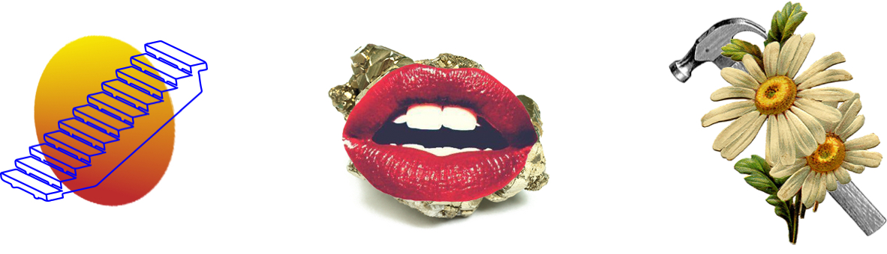
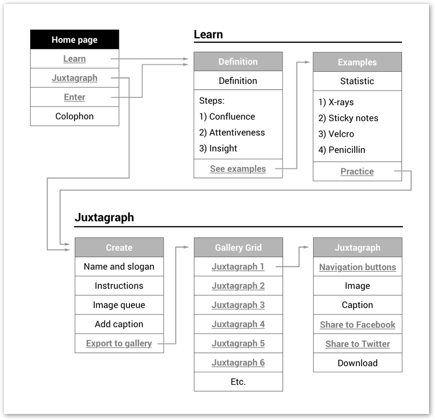
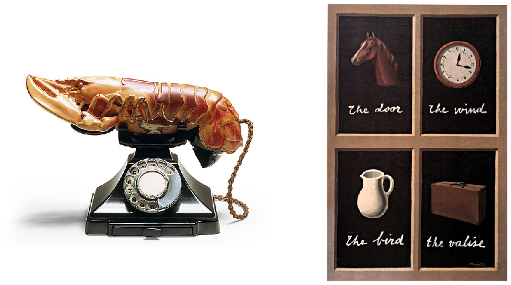

Why
How might creative problem solvers think differently about innovation and creativity? Inspired by Pagan Kennedy's article, this project aims to reframe serendipity as something that you can cultivate and allow users to experience the joy of unexpected discoveries so they can seek it out in real life. To make the message as accessible and shareable as possible, it's delivered in the form of a website:
The site architecture is separated into Learn and Juxtagraph to reflect the two goals of the project.
The animated home page is designed to subconciously introduce the concept of overlapping objects and ideas.

Magritte and Dalí serve as formal precedents for using juxtaposition in service of evoking ideas and emotions.
Responsive CSS rules adapt content to all screen sizes.

The purpose of the second section of the site is to show people the joy of unexpected discoveries.

Once a juxtagraph is made, it's added to a public gallery of every juxtagraph ever made on the site.

The randomized image queue currently has 111 images, chosen for the singularity of the image, multiple or metaphorical interpretations and how aesthetically or emotionally compelling the image is.


Serendipity.how was concieved of, designed and built in 9 weeks as the capstone of my BFA in Communication Design at Washington University in St. Louis.
It would not have been possible without generous support from Penina Acayo, Ze'ev Lailari, Jonathan Hanahan, Dan Borstleman, Keenan Zucker and all of my studio mates.
Thanks for reading! Now go check it out.